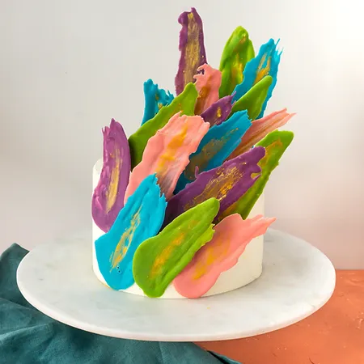

Carnival Rum Cake

Roll into the holiday season with with this boozy bake! Dark Chocolate sponge,
rolled around silky white chocolate Bailey's ganache and topped with a layer of chocolate glaze. The perfect festive pudding.
Prep Time: 40 mins
Cook Time: 20 mins
Chill Time: 4hr
Total Time: 5hr
Cook Time: 20 mins
Chill Time: 4hr
Total Time: 5hr
Servings: 6 people
Equipments: electric mixer, tea towel, piping bag and star piping tip.
Ingredients:
Sponge:
- 100g self-raising flour
- 20g cocoa powder
- 100g sugar
- 1/4 tsp salt
- 4 eggs
- icing sugar, for dusting
White Chocolate Ganache:
- 250g white chocolate
- 200g double cream
- 4 tbsp mascarpone
- 50g double cream
- 50g Baileys
- 1 tsp vanilla paste or essence
Chocolate Glaze:
- 200g dark chocolate
- 1 tbsp oil
Directions:
Sponge
- Preheat your oven to 180C and line a baking tray with parchment paper.
- Add the eggs and sugar to a large bowl and whip with an electric mixer until pale and fluffy, about 5 minutes. You can tell the mixture is ready by lifting the whisk out and seeing a ribbon of the mixture sit on top of the surface for 3 seconds before it disappears.
- Sift the flour, cocoa powder and salt over the egg mixture. Using a whisk, fold the mixture until just combined and all the clumps of flour are gone.
- Pour the mixture on your baking tray and use a palette knife to spread it out evenly.
- Bake for 12-15 minutes until the sponge is set.
- While the sponge is baking, prepare a clean tea towel to roll your sponge in. Lay the tea towel out on a flat surface and dust with icing sugar to prevent the sponge from sticking.
- When the sponge is baked and removed from the oven, set it to the side to cool for 2 minutes. Then flip it face down onto the tea towel, peel off the parchment paper from the back and carefully, starting on the short end, roll the sponge tightly with the towel. Set aside to cool while you make the filling.
White Chocolate Ganache:
- Heat up the double cream in the microwave (about 1 min)
- In a medium mixing bowl add 250 g white chocolate, then pour 200g hot double cream on top. Let it sit for 1 minute.
- Use the hand blender to mix it until smooth and bright.
- Cover it and refrigerate for at least 4 hours.
- Remove from the fridge add 4 tbsp mascarpone, 50g double cream, 50g Baileys and 1 tsp vanilla paste.
- Whisk your mixture, using your stand mixer/ hand mixer until fluffy, about 1 minute or less.
Chocolate Glaze:
- Place the chocolate and the oil in a microwavable bowl. Heat the chocolate in 30 second intervals until completely melted. Stirring between every 30 seconds.
- Allow to cool on the side for 5 minutes before pouring it over your sponge.
Assembly:
- Unroll your sponge from the tea towel and lay it out on a flat surface. Use a palette knife to spread the white chocolate ganache across the entire sponge.
- Begin to tightly roll the sponge, starting at the shortest end. Be careful not to crack the sponge as you roll.
- Once your sponge is rolled around the white chocolate filling, move the swiss roll ont a slotted cooling rack placed over a baking tray. Pour the slightly cooled melted chocolate over the swiss roll and allow to set before adding further garnish.
- If you want nice clean sides, use a serrated knife to cut both of the ends off to reveal the swirl.
Tips:
- When folding the flour into your eggs, be sure not to overmix and knock out all of the air. There is no raising agent in this batter so you are rlying on the air to raise your sponge.
- If the cream over-whips and starts to separate, heat in the microwave for a few seconds, then gently stir. Keep doing this until the cream becomes smooth again. Then whip again.